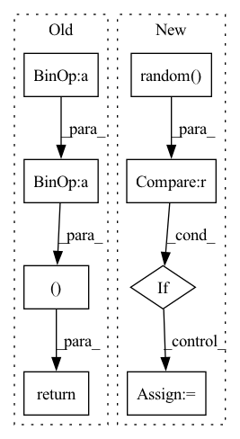

Pattern ID :37276

Before Change
audio_mask = (torch.arange(audio.shape[1], device=audio.device)[None, :, None] < audio_len[:, None, None]).float()
x = torch.exp(audio - 1e-6) * audio_mask
y = torch.cat([x[1:], x[:1]])
return torch.log(0.9 * x + 0.1 * y + 1e-6) * audio_mask, audio_len
return audio, audio_len
After Change
audio = self.timemask(audio)
if random.random() < AUGUMENT_RATE:
audio = self.freqmask(audio)
if random.random() < AUGUMENT_RATE:
audio = self.mixnoise(audio)
if random.random() < AUGUMENT_RATE:
audio = self.mixaudio(audio, audio_len)
In pattern: SUPERPATTERN
Frequency: 3
Non-data size: 8
Instances
Fragment ID: 107351141
Project Name: kaiidams/voice100
Commit Name: dfe0234fcc858357cb2a91bcba1da06792eabab7
Time: 2021-06-25
Author: katsuya.iida@gmail.com
File Name: voice100/audio.py
M Class Name: BatchSpectrogramAugumentation
N Class Name: BatchSpectrogramAugumentation
M Method Name: forward(3)
N Method Name: forward(3)
M Parent Class: nn.Module
N Parent Class: nn.Module
M File Name: voice100/audio.py
N File Name: voice100/audio.py
M Start Line: 73
M End Line: 78
N Start Line: 80
N End Line: 95
'>
Before Change
img_path = os.path.join(self.data_path, "ISBI2016_ISIC_Part3B_"+ self.mode +"_Data",name)
mask_name = name.split(".")[0] + "_Segmentation.png"
msk_path = os.path.join(self.data_path, "ISBI2016_ISIC_Part3B_"+ self.mode +"_Data",mask_name)
img = Image.open(img_path).convert("RGB")
mask = Image.open(msk_path).convert("L")
if self.mode == "Training":
label = 0 if self.label_list[index] == "benign" else 1
else:
label = int(self.label_list[index])
if self.transform:
state = torch.get_rng_state()
img = self.transform(img)
torch.set_rng_state(state)
mask = self.transform(mask)
if self.mode == "Training":
return (img, mask)
else:
return (img, mask, name)
After Change
if self.transform:
img = self.transform(img)
mask = self.transform(mask)
if random.random() < self.flip_p:
img = F.vflip(img)
mask = F.vflip(mask)
if self.training:
'>
Fragment ID: 107351364
Project Name: lucidrains/med-seg-diff-pytorch
Commit Name: 89dd29669ef12ad0774f879d02c51d4361e7ee51
Time: 2023-02-13
Author: isamu.website@gmail.com
File Name: src/loader_isic.py
M Class Name: ISICDataset
N Class Name: ISICDataset
M Method Name: __getitem__(2)
N Method Name: __getitem__(2)
M Parent Class: Dataset
N Parent Class: Dataset
M File Name: src/loader_isic.py
N File Name: src/loader_isic.py
M Start Line: 34
M End Line: 57
N Start Line: 24
N End Line: 47
'>
Before Change
"""
def get_random(self):
r = random.randint(0, self.batch_size)
batch_size = self.batch_size +(3*r)
return r,batch_size
def __iter__(self):
batch = []
//r,batch_size = self.get_random()
//print("\n0-",batch_size)
After Change
return sum(self.mosaic_array)
"""
def get_random(self,sample):
if random.random() < 0.5:
num = random.choice(sample)
else:
num = 1
return num
def __iter__(self):
batch = []
'>
Fragment ID: 107351491
Project Name: eric612/mobilenet-yolo-pytorch
Commit Name: 5bcfff1311976e68a70a3b1c0e0cf264dc7aa395
Time: 2021-04-20
Author: eric612kimo@yahoo.com.tw
File Name: CustomBatchSampler.py
M Class Name: GreedyBatchSampler
N Class Name: GreedyBatchSampler
M Method Name: get_random(2)
N Method Name: get_random(1)
M Parent Class: Subscript
N Parent Class: Subscript
M File Name: CustomBatchSampler.py
N File Name: CustomBatchSampler.py
M Start Line: 48
M End Line: 50
N Start Line: 47
N End Line: 52